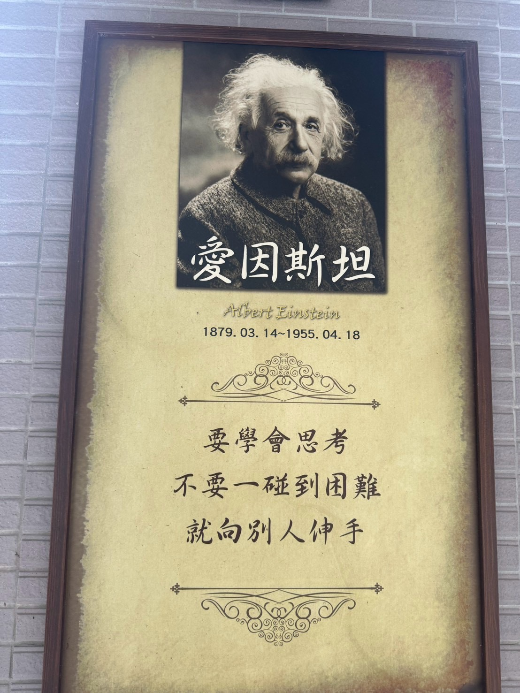

校園引言
STAGE 1｜思考之鑰
「要學會思考，不要一碰到困難就向別人伸手。」
📖 導覽文字
愛因斯坦例子：少年時的愛因斯坦曾想像「如果追著一束光跑，會看到什麼？」這種先在腦中預演的思想實驗，幫助他把問題想得更清楚。
校園連結：遇到數學題或閱讀題卡關時，先圈出已知條件、畫圖或寫下試過的方法；再帶著「我卡在哪一步？」去問同學或老師。獨立思考不是不合作，而是先讓自己的問題變清楚。
先試，再問。寫下你試過的方法，帶著問題找夥伴。
MISSION｜把「卡關」說清楚
成功條件：具體寫出「已嘗試的方法」與「下一個問題」。